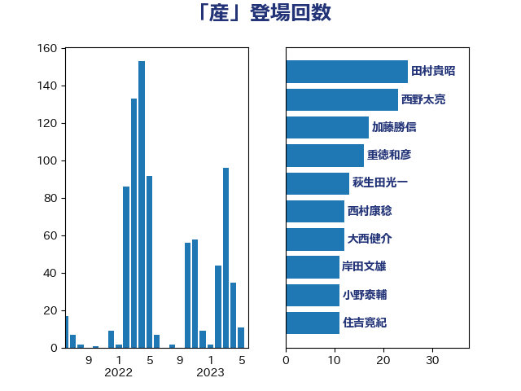

単語「産」

| 野上浩太郎 | 自由民主党 | 38 回 |
| 西野太亮 | 自由民主党 | 22 回 |
| 岩渕友 | 日本共産党 | 17 回 |
| 緑川貴士 | 立憲民主党 | 17 回 |
| 吉田統彦 | 立憲民主党 | 16 回 |
| 笠井亮 | 日本共産党 | 16 回 |
| 重徳和彦 | 立憲民主党 | 16 回 |
| 萩生田光一 | 自由民主党 | 13 回 |
| 大西健介 | 立憲民主党 | 12 回 |
| 高橋光男 | 公明党 | 12 回 |
| 住吉寛紀 | 日本維新の会 | 11 回 |
| 小野泰輔 | 日本維新の会 | 10 回 |
| 岸田文雄 | 自由民主党 | 10 回 |
| 川田龍平 | 立憲民主党 | 10 回 |
| 田村貴昭 | 日本共産党 | 10 回 |
| 緒方林太郎 | 無所属 | 10 回 |
| 紙智子 | 日本共産党 | 9 回 |
| 西銘恒三郎 | 自由民主党 | 9 回 |
| 野田聖子 | 自由民主党 | 9 回 |
| 神谷裕 | 立憲民主党 | 8 回 |
| 梶山弘志 | 自由民主党 | 7 回 |
| 田村憲久 | 自由民主党 | 7 回 |
| 長友慎治 | 国民民主党 | 7 回 |
| 青山繁晴 | 自由民主党 | 7 回 |
| 下野六太 | 公明党 | 6 回 |
| 若宮健嗣 | 自由民主党 | 6 回 |
| 鈴木敦 | 国民民主党 | 6 回 |
| 須藤元気 | 無所属 | 6 回 |
| 高木かおり | 日本維新の会 | 6 回 |
| 井上哲士 | 日本共産党 | 5 回 |
| 勝部賢志 | 立憲民主党 | 5 回 |
| 庄子賢一 | 公明党 | 5 回 |
| 森本真治 | 立憲民主党 | 5 回 |
| 武部新 | 自由民主党 | 5 回 |
| 石川香織 | 立憲民主党 | 5 回 |
| 舟山康江 | 国民民主党 | 5 回 |
| 金子恵美 | 立憲民主党 | 5 回 |
| 国光あやの | 自由民主党 | 4 回 |
| 安江伸夫 | 公明党 | 4 回 |
| 平沢勝栄 | 自由民主党 | 4 回 |
| 杉田水脈 | 自由民主党 | 4 回 |
| 東国幹 | 自由民主党 | 4 回 |
| 林芳正 | 自由民主党 | 4 回 |
| 梅村みずほ | 日本維新の会 | 4 回 |
| 梅谷守 | 立憲民主党 | 4 回 |
| 田名部匡代 | 立憲民主党 | 4 回 |
| 空本誠喜 | 日本維新の会 | 4 回 |
| 細田健一 | 自由民主党 | 4 回 |
| こやり隆史 | 自由民主党 | 3 回 |
| 丹羽秀樹 | 自由民主党 | 3 回 |
| 坂井学 | 自由民主党 | 3 回 |
| 大塚耕平 | 国民民主党 | 3 回 |
| 小泉進次郎 | 自由民主党 | 3 回 |
| 小野田紀美 | 自由民主党 | 3 回 |
| 渡辺周 | 立憲民主党 | 3 回 |
| 熊野正士 | 公明党 | 3 回 |
| 片山大介 | 日本維新の会 | 3 回 |
| 玄葉光一郎 | 立憲民主党 | 3 回 |
| 穀田恵二 | 日本共産党 | 3 回 |
| 高橋千鶴子 | 日本共産党 | 3 回 |
| 上田清司 | 国民民主党 | 2 回 |
| 五十嵐清 | 自由民主党 | 2 回 |
| 今枝宗一郎 | 自由民主党 | 2 回 |
| 塩村あやか | 立憲民主党 | 2 回 |
| 小宮山泰子 | 立憲民主党 | 2 回 |
| 小沼巧 | 立憲民主党 | 2 回 |
| 山下芳生 | 日本共産党 | 2 回 |
| 山本香苗 | 公明党 | 2 回 |
| 山田俊男 | 自由民主党 | 2 回 |
| 川合孝典 | 国民民主党 | 2 回 |
| 早坂敦 | 日本維新の会 | 2 回 |
| 根本幸典 | 自由民主党 | 2 回 |
| 橋本聖子 | 無所属 | 2 回 |
| 河野義博 | 公明党 | 2 回 |
| 浦野靖人 | 日本維新の会 | 2 回 |
| 渡辺猛之 | 自由民主党 | 2 回 |
| 玉木雄一郎 | 国民民主党 | 2 回 |
| 田村まみ | 国民民主党 | 2 回 |
| 矢倉克夫 | 公明党 | 2 回 |
| 神田潤一 | 自由民主党 | 2 回 |
| 福島伸享 | 無所属 | 2 回 |
| 福田昭夫 | 立憲民主党 | 2 回 |
| 竹谷とし子 | 公明党 | 2 回 |
| 自見はなこ | 自由民主党 | 2 回 |
| 茂木敏充 | 自由民主党 | 2 回 |
| 菅義偉 | 自由民主党 | 2 回 |
| 葉梨康弘 | 自由民主党 | 2 回 |
| 西村康稔 | 自由民主党 | 2 回 |
| 西田実仁 | 公明党 | 2 回 |
| 金村龍那 | 日本維新の会 | 2 回 |
| 鈴木憲和 | 自由民主党 | 2 回 |
| 鈴木義弘 | 国民民主党 | 2 回 |
| 長峯誠 | 自由民主党 | 2 回 |
| 阿達雅志 | 自由民主党 | 2 回 |
| たがや亮 | れいわ新選組 | 1 回 |
| ながえ孝子 | 無所属 | 1 回 |
| 三原じゅん子 | 自由民主党 | 1 回 |
| 上杉謙太郎 | 自由民主党 | 1 回 |
| 中川宏昌 | 公明党 | 1 回 |
| 中村裕之 | 自由民主党 | 1 回 |
| 中西祐介 | 自由民主党 | 1 回 |
| 中野洋昌 | 公明党 | 1 回 |
| 丸川珠代 | 自由民主党 | 1 回 |
| 仁木博文 | 無所属 | 1 回 |
| 佐藤英道 | 公明党 | 1 回 |
| 加藤竜祥 | 自由民主党 | 1 回 |
| 北村経夫 | 自由民主党 | 1 回 |
| 古川元久 | 国民民主党 | 1 回 |
| 古賀之士 | 立憲民主党 | 1 回 |
| 吉田とも代 | 日本維新の会 | 1 回 |
| 吉田久美子 | 公明党 | 1 回 |
| 吉田豊史 | 日本維新の会 | 1 回 |
| 吉良よし子 | 日本共産党 | 1 回 |
| 和田義明 | 自由民主党 | 1 回 |
| 國重徹 | 公明党 | 1 回 |
| 土田慎 | 自由民主党 | 1 回 |
| 堀内詔子 | 自由民主党 | 1 回 |
| 塩田博昭 | 公明党 | 1 回 |
| 大串博志 | 立憲民主党 | 1 回 |
| 大家敏志 | 自由民主党 | 1 回 |
| 宮内秀樹 | 自由民主党 | 1 回 |
| 宮本徹 | 日本共産党 | 1 回 |
| 小林鷹之 | 自由民主党 | 1 回 |
| 小熊慎司 | 立憲民主党 | 1 回 |
| 小田原潔 | 自由民主党 | 1 回 |
| 小西洋之 | 立憲民主党 | 1 回 |
| 山添拓 | 日本共産党 | 1 回 |
| 岩田和親 | 自由民主党 | 1 回 |
| 岸真紀子 | 立憲民主党 | 1 回 |
| 平将明 | 自由民主党 | 1 回 |
| 打越さく良 | 立憲民主党 | 1 回 |
| 早稲田ゆき | 立憲民主党 | 1 回 |
| 本村伸子 | 日本共産党 | 1 回 |
| 杉尾秀哉 | 立憲民主党 | 1 回 |
| 杉本和巳 | 日本維新の会 | 1 回 |
| 松本尚 | 自由民主党 | 1 回 |
| 柿沢未途 | 無所属 | 1 回 |
| 横山信一 | 公明党 | 1 回 |
| 櫻井周 | 立憲民主党 | 1 回 |
| 武田良太 | 自由民主党 | 1 回 |
| 江田憲司 | 立憲民主党 | 1 回 |
| 池畑浩太朗 | 日本維新の会 | 1 回 |
| 泉健太 | 立憲民主党 | 1 回 |
| 浅田均 | 日本維新の会 | 1 回 |
| 浅野哲 | 国民民主党 | 1 回 |
| 浜口誠 | 国民民主党 | 1 回 |
| 渡辺創 | 立憲民主党 | 1 回 |
| 漆間譲司 | 日本維新の会 | 1 回 |
| 熊田裕通 | 自由民主党 | 1 回 |
| 片山さつき | 自由民主党 | 1 回 |
| 田中健 | 国民民主党 | 1 回 |
| 白石洋一 | 立憲民主党 | 1 回 |
| 石井正弘 | 自由民主党 | 1 回 |
| 石井章 | 日本維新の会 | 1 回 |
| 石井苗子 | 日本維新の会 | 1 回 |
| 石垣のりこ | 立憲民主党 | 1 回 |
| 礒崎哲史 | 国民民主党 | 1 回 |
| 篠原孝 | 立憲民主党 | 1 回 |
| 篠原豪 | 立憲民主党 | 1 回 |
| 美延映夫 | 日本維新の会 | 1 回 |
| 若松謙維 | 公明党 | 1 回 |
| 菅家一郎 | 自由民主党 | 1 回 |
| 藤岡隆雄 | 立憲民主党 | 1 回 |
| 藤巻健太 | 日本維新の会 | 1 回 |
| 足立敏之 | 自由民主党 | 1 回 |
| 野中厚 | 自由民主党 | 1 回 |
| 野間健 | 立憲民主党 | 1 回 |
| 鈴木宗男 | 日本維新の会 | 1 回 |
| 阿部司 | 日本維新の会 | 1 回 |
| 青山大人 | 立憲民主党 | 1 回 |
| 馬場伸幸 | 日本維新の会 | 1 回 |
| 高橋克法 | 自由民主党 | 1 回 |
| 高鳥修一 | 自由民主党 | 1 回 |